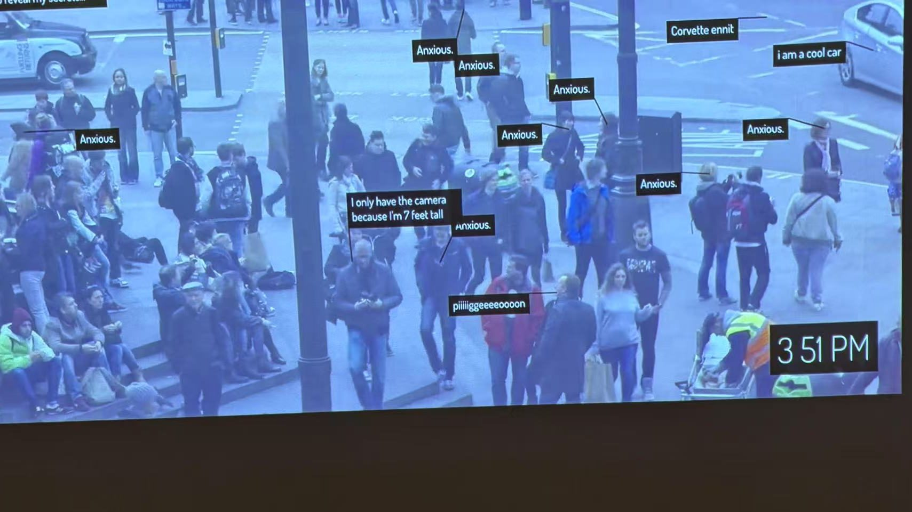

This week I visited the V&A Museum and saw an intriguing digital artwork called Watching Each Other by Kyle McDonald. The piece is a “crowdsourced description of 12 hours in Piccadilly Circus.” To create it, McDonald set up a web-based platform where he uploaded video footage of Piccadilly Circus and invited the public to watch and add tags or comments on the small details they noticed. Many of these comments are silly, funny, or absurd—people imagine what strangers are thinking or invent stories about their actions.

At first, I thought this work was quite interesting, like a digital version of an observation game. But the more I thought about it, the more I realized it actually explores something deeper. On the one hand, humans are innately curious about each other, on the other hand, large-scale surveillance has magnified this curiosity into a huge and complex system. This work makes me start to wonder: when we observe strangers in this way, are we just “playing” purely, or have we actually become part of a larger “being watched/watching” system?
What impressed me most is that in this work, the audience are both observers and creators of its meaning. It’s not just a video shot by McDonald, but jointly completed through the imagination and comments of the public. This reminds me of many creative computing projects, which truly “come into being” only with audience participation.
For my own AR/VR Winchester Cathedral project, this work has also inspired new ideas. I began to wonder whether users could not only be “visitors” but also leave their own observations or feelings — such as adding digital notes or messages in the virtual space, which could accumulate over time to form a “shared memory” venue.
This visit made me reflect on the power of “collective interaction” in digital art, and also made me realize that viewing can be not just passive, but active, gamified, and even an experience with a touch of unease.